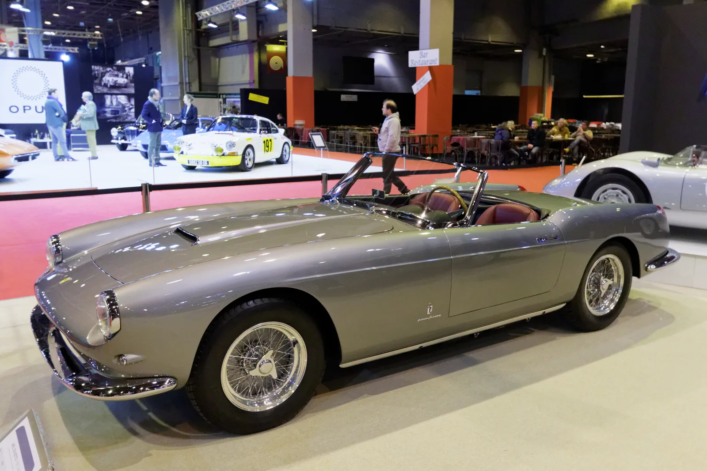
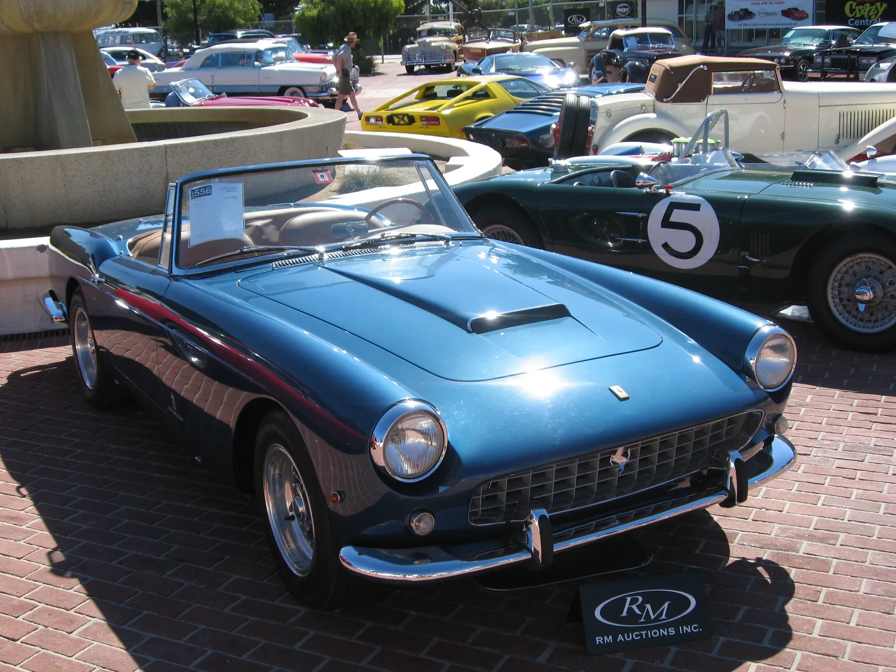
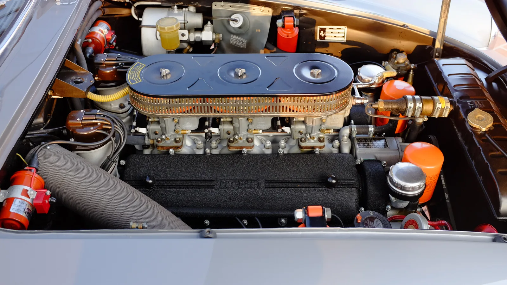

▲ RM 소더비 몬터레이 경매에 출품되는 1958년식 페라리 250 GT 카브리올레 시리즈 I. 피닌파리나가 디자인한 이 모델은 전 세계 40대만 생산됐다
1958년식 페라리 250 GT 카브리올레 시리즈 I by 피닌파리나가 2026년 8월 13~15일 열리는 RM 소더비 몬터레이 경매에 출품됩니다. 예상 낙찰가는 400만~500만 달러, 우리 돈으로 약 54억~68억 원에 달합니다. 이 차는 피닌파리나가 디자인한 시리즈 I 카브리올레 총 40대 중 18번째로 제작된 개체로, 뉴욕 오토쇼에서 최초로 대중에 공개된 이력을 갖고 있습니다.
1. 매칭넘버, 클래식카 시장 최고의 프리미엄
이 개체가 특별한 대접을 받는 이유 중 하나는 '매칭넘버'입니다. 섀시, 엔진, 기어박스, 후축까지 모두 출고 당시와 동일한 번호를 유지하고 있다는 의미입니다. 클래식카 컬렉터 시장에서 매칭넘버는 진정성과 보존 상태를 가늠하는 핵심 지표로, 같은 모델이라도 매칭넘버 여부에 따라 가격이 크게 갈립니다. 여기에 페라리 본사가 직접 진위와 사양을 검증하는 페라리 클라시케 인증까지 보유하고 있어, 신뢰도 면에서 최상급으로 평가받습니다.

▲ 같은 시리즈 I 사양의 250 GT 카브리올레. 피닌파리나가 디자인한 이 시리즈는 전 세계 40대만 제작된 극희귀 모델이다
2. 손대지 않은 상태 그대로 — 페블비치 보존상의 의미
이 차량은 오랫동안 대중 앞에 공개되지 않은 채 보관돼 왔으며, 상태는 거의 미복원에 가까운 것으로 알려졌습니다. 2023년에는 세계적인 클래식카 품평회인 페블비치 콩쿠르 델레강스에서 보존급 상을 수상했습니다. 이는 완전히 새로 복원한 차가 아니라, 원형을 최대한 유지한 상태에서 역사적 가치를 인정받았다는 의미입니다. 클래식카 시장에서는 최근 '지나친 복원보다 오리지널리티'를 중시하는 흐름이 강해지고 있는데, 이 차는 그 트렌드에 정확히 부합하는 사례입니다.
| 항목 | 내용 |
|---|---|
| 엔진 | 3.0L 콜롬보 V12 |
| 디자인 | 피닌파리나 |
| 생산량(시리즈 I) | 전 세계 40대 |
| 매칭넘버 | 섀시·엔진·기어박스·후축 모두 일치 |
| 인증 | 페라리 클라시케 |
| 예상 낙찰가 | $4,000,000~$5,000,000 |

▲ 250 GT 카브리올레 후속 시리즈 II 후면. 시리즈 I보다 생산량이 많은 후속 모델로, 초기형인 시리즈 I의 희소성을 비교해서 보여준다
3. "작은 디테일 하나가 7자리 숫자를 바꾼다"
RM 소더비 측은 이 차량과 관련해 "작은 세부 사항의 차이가 최종 낙찰가를 7자리 숫자만큼 변동시킬 수 있다"고 설명했습니다. 클래식 페라리 시장에서는 도장 상태, 원부속 유지 여부, 소유 이력의 투명성 같은 미세한 요소들이 최종 가격에 수백만 달러 단위의 차이를 만들어낼 수 있다는 의미입니다. 이번 출품작은 뉴욕 오토쇼 공개 이력, 매칭넘버, 페라리 클라시케 인증, 페블비치 수상 경력까지 클래식카 컬렉터가 원하는 요소를 두루 갖춘 만큼, 예상가 상단인 500만 달러에 근접하거나 이를 넘어설 가능성도 거론됩니다.

▲ 같은 콜롬보 V12 계열 엔진을 탑재한 250 GT 루쏘의 엔진룸. 지오토 비자리니가 설계한 이 3.0리터 V12는 250 시리즈 전반의 심장 역할을 했다
4. 60년 넘게 사랑받는 콜롬보 V12
250 GT 시리즈 전체를 관통하는 심장은 지오토 비자리니가 설계한 3.0리터 콜롬보 V12 엔진입니다. 250 카브리올레뿐 아니라 250 GT 루쏘, 250 GTO 등 페라리 역사상 가장 상징적인 모델 다수가 이 엔진 계열을 공유했습니다. 정교한 수작업 조립과 매끄러운 회전 질감으로 유명한 이 엔진은, 오늘날까지도 클래식 페라리 컬렉터들이 250 시리즈를 최우선으로 꼽는 핵심 이유 중 하나로 꼽힙니다.
5. 정리 — 몬터레이 카위크의 하이라이트
매년 8월 열리는 몬터레이 카위크는 전 세계 클래식카 시장의 흐름을 가늠하는 척도로 여겨집니다. 이번 RM 소더비 경매에 출품되는 1958년식 250 GT 카브리올레 역시, 페라리 클래식 컨버터블 시장의 현재 가치를 보여주는 중요한 사례가 될 전망입니다. 실제 낙찰 결과가 나오면 클래식 페라리 시장 전반의 온도를 가늠하는 참고 지표로 활용될 것으로 보입니다.